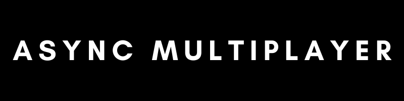

About this project:
This is a small scale project where I learned how to use a database to make an asynchronous multiplayer game.
Unity
C#
PHP
Solo project
This is a small scale project where I learned how to use a database to make an asynchronous multiplayer game.
Once the player tries to build something, the game sends a request to the server to check if the player has enough resources to build the object, and if the tile is unoccupied.
// try find tile in db
$tile = $request->tile;
$tolerance = 0.01;
$stmt = $connectionResult->prepare(
"SELECT * FROM user_tiles WHERE user_id = :user_id
AND ABS(tile_pos_x - :posX) < :tolerance
AND ABS(tile_pos_y - :posY) < :tolerance"
);
$stmt->execute([
':user_id' => $userid,
':posX' => $tile->posX,
':posY' => $tile->posY,
':tolerance' => $tolerance
]);
$tileResult = $stmt->fetch(PDO::FETCH_ASSOC);
// tile doesnt exist
if ($tileResult == false) {
// check if request info is empty
if ($request->tile->tileType == null) {
$response->status = "emptyTileData";
$response->customMessage = "tile data sent was empty.";
$response->userData = GetUserData($connectionResult, $userid);
die(json_encode($response));
}
// check price
if (CheckPrice($connectionResult, $userid, $tile) == true) {
// update gold
UpdateGold($connectionResult, $userid, $tile);
// send succes response
$response->userData = GetUserData($connectionResult, $userid);
$response->status = "tileFree";
$response->customMessage = "succesfully placed building";
die(json_encode($response));
}
else {
$response->status = "notEnoughGold";
$response->customMessage = "user doesn't have enough gold to buy this building.";
die(json_encode($response));
}
}
else {
// tile already exists
include 'GetGold.php';
}
Once the player enters the game, the game sends a request to see what the plot looks like. And then constructs the plot based on the response.
private IEnumerator PlotConstructRequest(PlotGetRequest getRequest)
{
yield return StartCoroutine(manager.WebRequest<PlotGetRequest, GetPlotResponse>(getRequest,
response =>
{
// construct plot from size and user buildings
int[] plotSize = Array.ConvertAll(response.plotSize.Split(','), int.Parse);
CreatePlot(plotSize, response.tiles);
// invoke user data
EventManager.OnUserDataUpdate(response.userData);
}, url));
}
private void CreatePlot(int[] plotSize, TileData[] tiles)
{
// create plot
for (int i = 0; i < plotSize[0]; i++)
{
for (int j = 0; j < plotSize[1]; j++)
{
// set position
Vector2Int position = new Vector2Int(j * tileSize, i * tileSize);
Instantiate(plotTilePrefab, new Vector3(position.x, 0, position.y), Quaternion.identity);
}
}
// place buildings
foreach (TileData tile in tiles)
{
Vector3 position = new Vector3(tile.posX, 0.5f, tile.posY);
buildingManager.CreateBuilding(new(), position, tile.tileType, tile.lastUpdate);
}
}